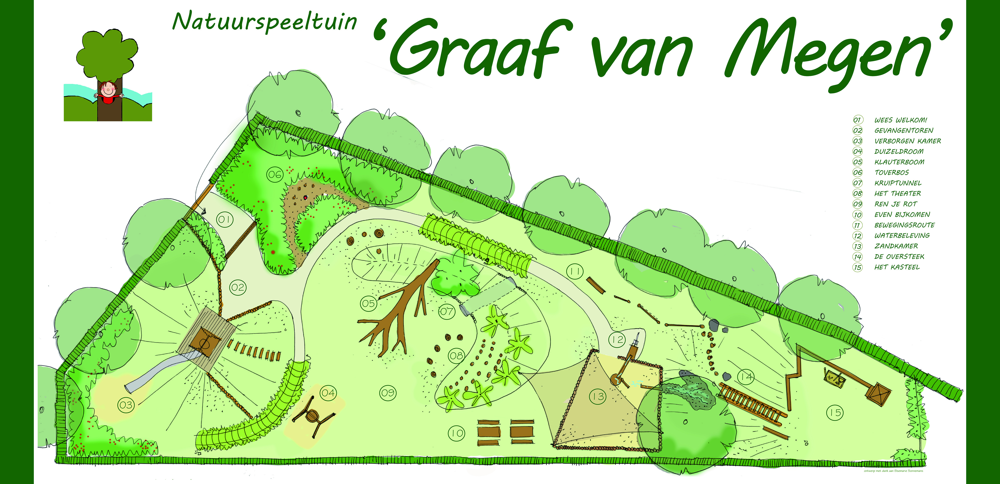

Graaf van Megen
De Natuurspeeltuin
Welkom bij 'Graaf van Megen'
Tegenwoordig is Megen een onderdeel van de gemeente Oss, vroeger was Megen een zelfstandig graafschap. In de speeltuin ga je dus een stukje terug in de tijd.
Vroeger was er een ommuring om Megen en kwam je niet zomaar binnen in het graafschap, en kwam je binnen door een van de vier poorten.
Dus stap binnen in de speeltuin onder de Maaspoort met aangezicht van Megen. Maar pas op dat je niet betrapt zult worden, want dan kun je zomaar eens in de gevangenentoren terecht komen. Maar lukt het je om bovenop de toren te klimmen, zonder gevangen genomen te worden, dan zal je in de verte op het kasteel de vlag van Megen zien. Zo zag de vlag er vroeger ook echt uit!
Nu zijn er veel gevechten en zelfs oorlogen geweest in het verleden om Megen in handen te krijgen, dus je zult hard moeten werken om via de hindernisroute het kasteel te bereiken en de vlag te veroveren.
Pas op dat je geen natte voeten krijgt op de hindernisroute. Want dat we droge voeten hebben op deze plek is niet altijd zo geweest! We hebben nu bijvoorbeeld dijken die ons beschermen, kijk maar eens bij de waterpomp hoe dat precies werkt!
En kun je van al dat spelen wel wat eten gebruiken, vroeger was het heel gebruikelijk rechtstreeks van het land te eten, er waren natuurlijk ook nog geen supermarkten zoals wij deze nu kennen. Want er groeit van alles in de natuur; zo ook in de speeltuin. Ga maar eens op zoek naar de bessen, appels, noten net zoals ze dat vroeger deden!


Praktische info
Openingstijden
Elke dag: 08:00 – 20:00 uur
Gratis toegang